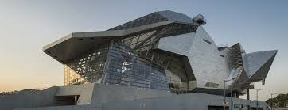
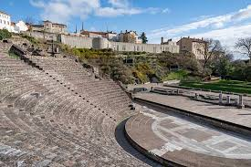

Musée des Confluences
The Musée des Confluences is one of Lyon’s most striking landmarks, both for its bold, futuristic architecture and its immersive exhibitions. Located at the meeting point of the Rhône and Saône rivers, the museum explores the intersections of science, anthropology, and human history through thoughtfully curated displays. Inside, visitors can journey through topics ranging from the origins of life to the evolution of societies, making it a fascinating stop for anyone curious about how our world—and humanity—has taken shape.

Lugdunum Museum
The Lugdunum Museum offers a captivating look into Lyon’s origins as a major Roman city. Set on the slopes of Fourvière Hill, the museum blends seamlessly into the landscape and houses an impressive collection of artifacts, including mosaics, sculptures, and everyday objects from ancient Lugdunum. Just steps away, the remarkably preserved Roman theaters bring history to life, allowing visitors to imagine the city as it stood over 2,000 years ago.

Notre Dame de Fourvière
Perched high above the city, Notre-Dame de Fourvière is one of Lyon’s most iconic landmarks, offering both spiritual significance and breathtaking panoramic views. This 19th-century basilica is known for its ornate interior, intricate mosaics, and distinctive architecture that blends Romanesque and Byzantine styles. Whether you visit for its history, its beauty, or simply the sweeping view over Lyon’s rooftops, Fourvière is an essential stop that captures the city’s charm from above.